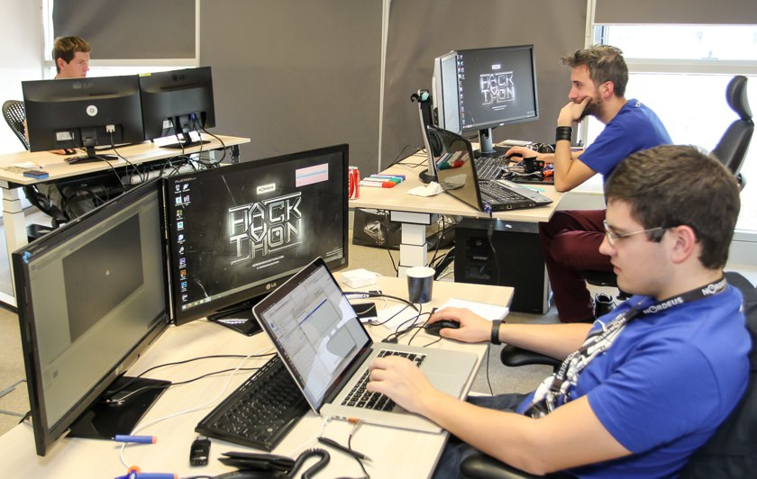
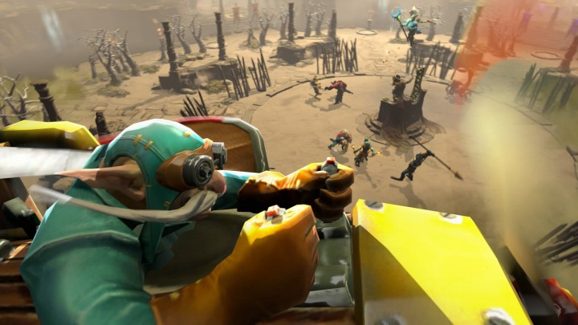
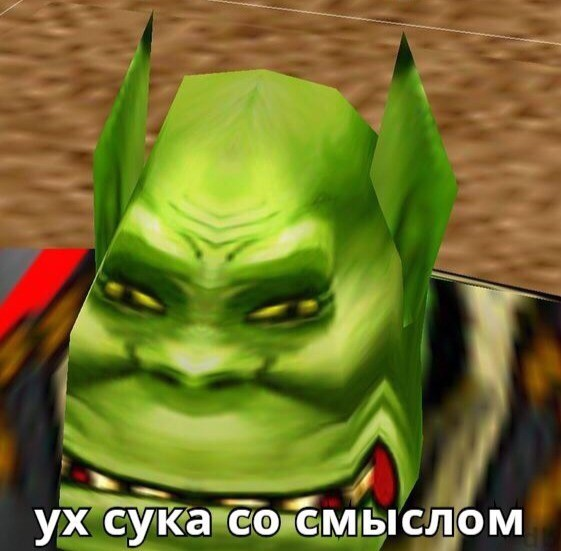

Defense of the Ancients 2Dota 2 — компьютерная многопользовательская командная игра в жанре multiplayer online battle arena,
разработанная Valve Corporation. Игра является продолжением DotA — пользовательской карты-модификации
для игры Warcraft III: Reign of Chaos и дополнения к ней Warcraft III: The Frozen Throne.
Игра изображает сражение на карте особого вида; в каждом матче участвуют две команды по пять игроков,
управляющих «героями» — персонажами с различными наборами способностей. Для победы в матче
команда должна уничтожить особый объект-«крепость», принадлежащий вражеской стороне, и защитить
от уничтожения собственную «крепость». Dota 2 работает по модели free-to-play с элементами микроплатежей.
Разработка игры
Разработка игры началась в 2009 году, когда компания Valve приняла на работу основного разработчика DotA — IceFrog,
а летом 2010 года подала заявку на регистрацию этой торговой марки. 13 октября 2010 года на игровом портале
Game Informer игра была анонсирована к выходу в 2011 году. 15 августа 2011 года в официальном блоге
был опубликован трейлер к игре. Dota 2 вышла в июле 2013 года после того,
как два года находилась в стадии бета-тестирования.Изначально Dota 2 была выпущена на игровом движке Source,
после чего в 2015 году была портирована на Source 2,став первой работающей на нём игрой.

Игровой процесс
В Dota 2 предусмотрена возможность создавать пользовательские режимы игры,
оформление карты и косметические предметы для героев, после чего добавить их в Dota 2 при помощи Steam Workshop.
Dota 2 является одной из наиболее популярных игр в Steam и получила в целом положительные отзывы критиков за игровой процесс,
качество производства и сохранение положительных сторон своей предшественницы.
Среди основных недостатков игры была отмечена сложность обучения.

Киберспорт
Dota 2 является активной киберспортивной дисциплиной, в которой профессиональные команды со всего мира соревнуются
в различных лигах и турнирах. Премиум-турниры по Dota 2 имеют призовые фонды в миллионы долларов,
не раз становившиеся крупнейшими в истории киберспорта. Самый крупный турнир по игре — The International,
ежегодно проводимый Valve. Начиная с сезона 2017/18 Valve также организует Dota Pro Circuit — профессиональный сезон,
проводящийся в течение года. Крупные профессиональные турниры по Dota 2 транслируются на видеостриминговых сервисах,
иногда набирая свыше миллиона зрителей одновременно. Людей, играющих в Dota 2, часто называют «дотерами»
Первоисточник
1 2 Связь с разработчиком сайта
Ничто не истинно, всё дозволено

{kind=link}